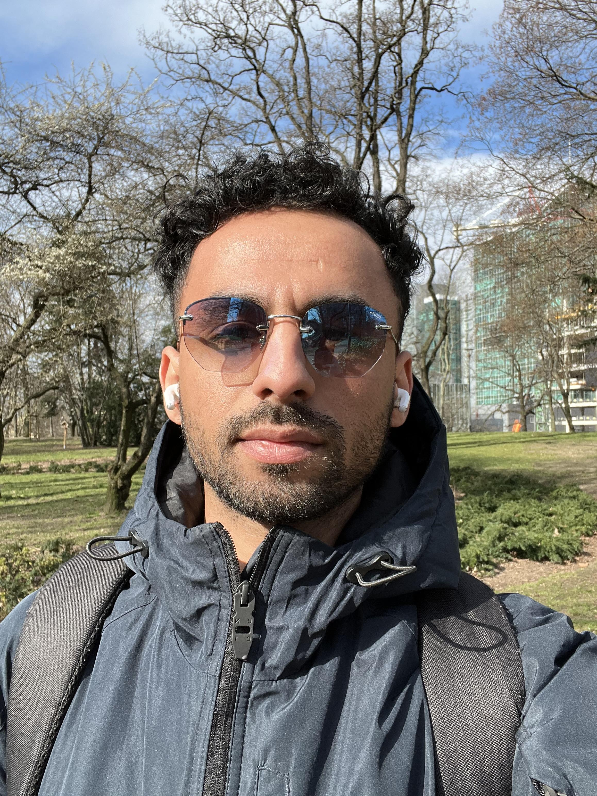

Karim Chihani
📨 chihanikarim07@email.com |
📱 +48579273565 |
🏡 Poznan, Poland |
About me:
Graduated Engineering Management first cycle on May 2022, Experienced Technical Support Engineer with a
strong background in problem-solving and customer service. Skilled in troubleshooting and resolving technical
issues across a wide range of systems and software. Took it upon myself to learn Networking, Linux and Python, I'm interested in IT
infrastructure provisioning and management and building solutions with the focus on cloud technologies and
the goal to be a DevOps Engineer. I am currently preparing to pass my CCNA exam.
Reach me: